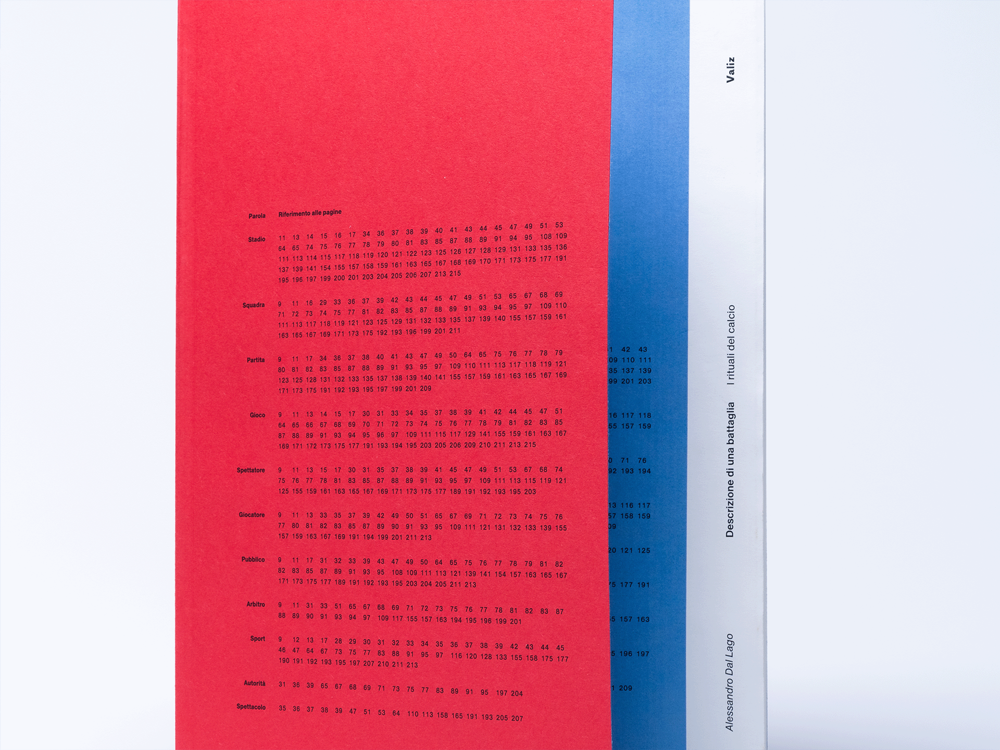
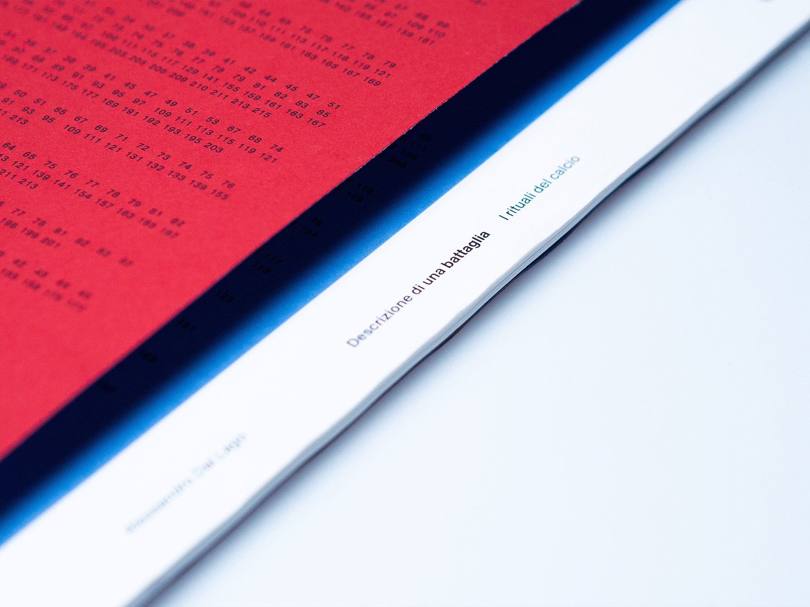
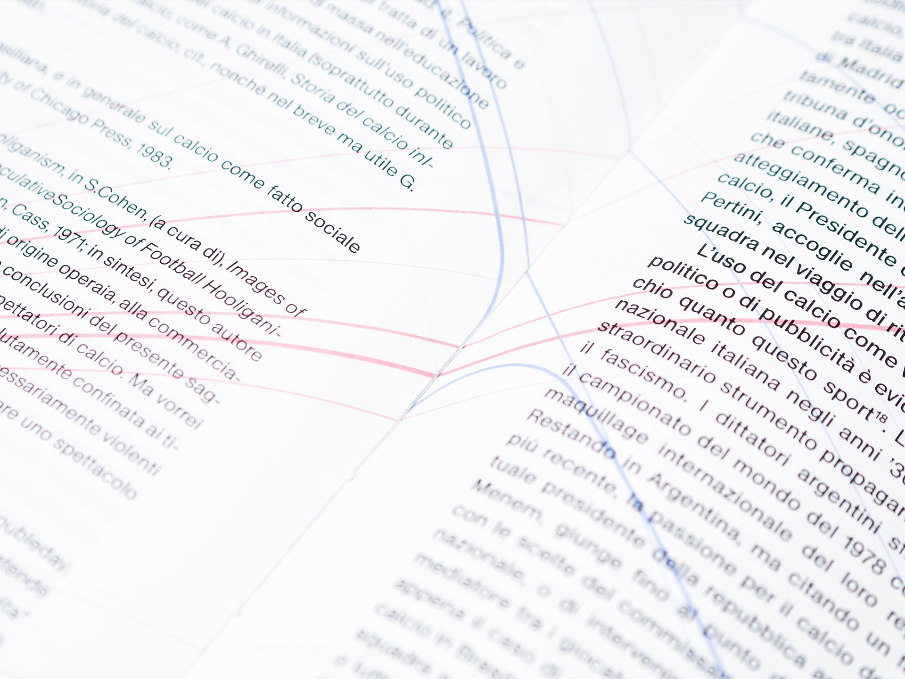
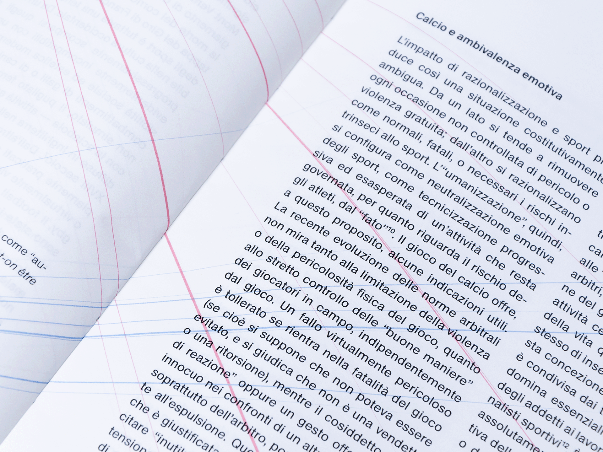
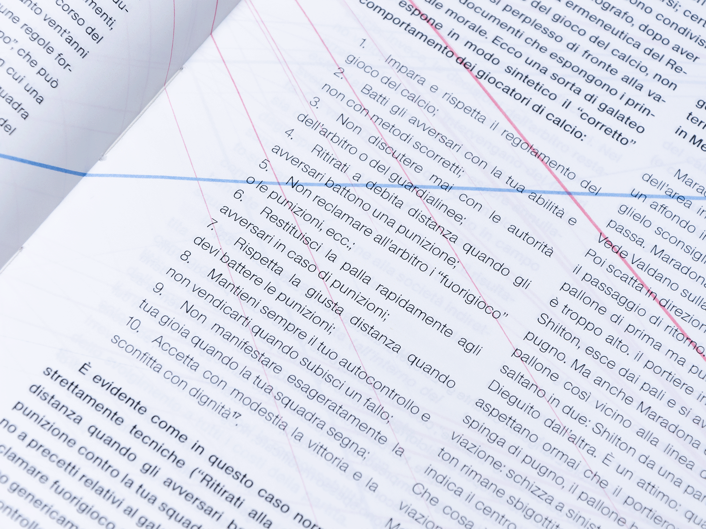
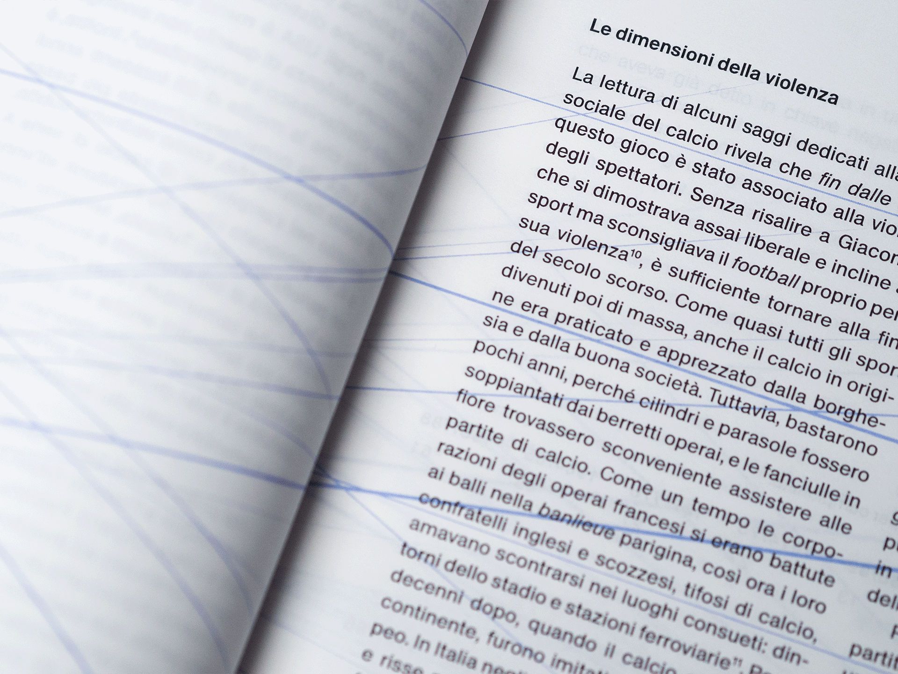

descrizione di una battaglia is a project for a book that visually translates the contents of alessandro dal lago's eponymous work. the assumption that provided the foundations for the development of the project lies in a concept that the author himself declares to be the "pole star" of his research: the concept of epoché. epoché is a technique used in sociology that consists in taking a logical distance from the subject under examination, in order to observe the 'oddities' of a phenomenon veiled by the layer of ordinariness that envelops events taken for granted. This is the reason why in this artefact the game of football, and the complex system of ritual relations that are linked to it, are represented in the terms of the human cardiovascular system: a powerful metaphor, capable of referring both to something profoundly instinctive and ancestral - as is the expressiveness of organised cheering - and to the objectivity of scientific language - as is the gaze of the sociologist.





the equilibrium breakdown
accepting the possibility of the system's collapse becomes easier for the reader, if placed in a position to abandon his or her own prejudices against violence.
